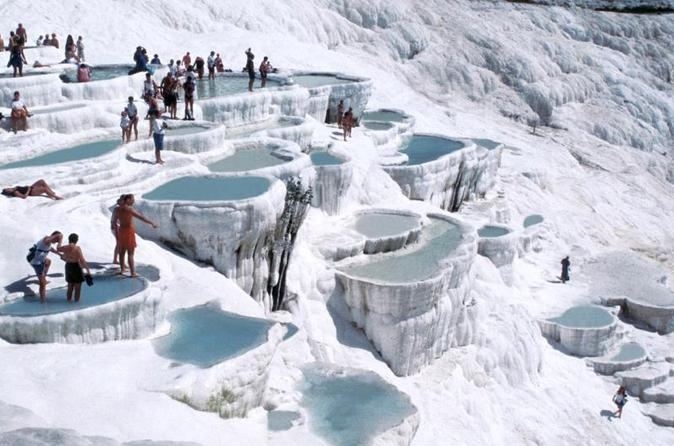

Pamukkale, meaning "cotton castle" in Turkish, is a natural site in Denizli in southwestern Turkey. The area is famous for a carbonate mineral left by the flowing water.[1] It is located in Turkey's Inner Aegean region, in the River Menderes valley, which has a temperate climate for most of the year. The ancient Greco-Roman city of Hierapolis was built on top of the white "castle" which is in total about 2,700 metres (8,860 ft) long, 600 m (1,970 ft) wide and 160 m (525 ft) high. It can be seen from the hills on the opposite side of the valley in the town of Denizli, 20 km away.  Known as Pamukkale (Cotton Castle) or ancient Hierapolis (Holy City), this area has been drawing the weary to its thermal springs since the time of Classical antiquity.[1] The Turkish name refers to the surface of the shimmering, snow-white limestone, shaped over millennia by calcium-rich springs. Dripping slowly down the vast mountainside, mineral-rich waters foam and collect in terraces, spilling over cascades of stalactites into milky pools below. Legend has it that the formations are solidified cotton (the area’s principal crop) that giants left out to dry.[citation needed] Tourism is and has been a major industry in the area for thousands of years, due to the attraction of the thermal pools.[1] As recently as the mid-20th century, hotels were built over the ruins of Hierapolis, causing considerable damage.[citation needed] An approach road was built from the valley over the terraces, and motor bikes were allowed to go up and down the slopes. When the area was declared a World Heritage Site, the hotels were demolished and the road removed and replaced with artificial pools.[citation needed] Overshadowed by natural wonder, Pamukkale’s well-preserved Roman ruins and museum have been remarkably underestimated and unadvertised; tourist brochures over the past 20 years have mainly featured photos of people bathing in the calcium pools. Aside from a small footpath running up the mountain face, the terraces are all currently off-limits, having suffered erosion and water pollution at the feet of tourists.